Portafolio de
proyectos
Cuatro proyectos que documentan el ciclo completo del diseño electrónico analógico — desde la formulación matemática hasta la validación experimental sobre protoboard.
Este proyecto fue mi primer contacto real con el ciclo completo de ingeniería analógica: diseñar desde la matemática, simular en Multisim y validar con osciloscopio. Construir cinco circuitos distintos — filtros, osciladores, comparadores e instrumentación — me enseñó que la diferencia entre la teoría y el hardware real no es un fracaso, sino el punto de partida del aprendizaje.

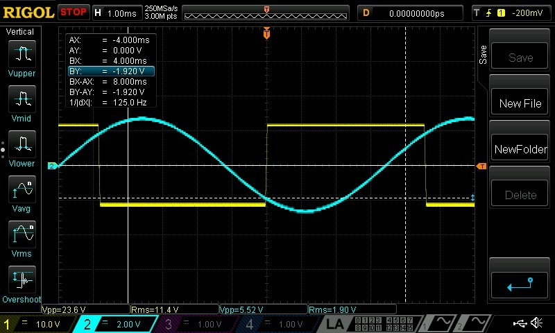
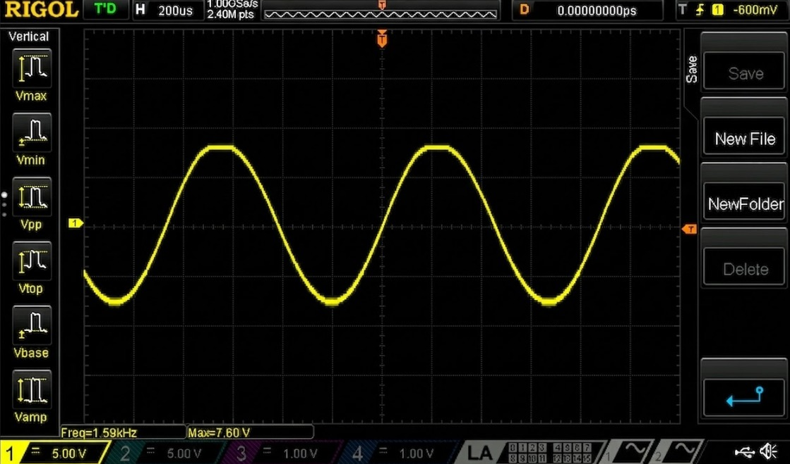

Este proyecto me formó como ingeniero que diseña para usuarios reales. Visitamos laboratorios, encontramos una necesidad concreta en CESURCAFÉ y construimos un acondicionador de señal analógico para registrar curvas de tueste de café. Aprendí que la ganancia de 0.40% de error no es el único resultado importante — el offset parásito del 53.9% me enseñó más sobre ingeniería de medición que cualquier simulación.
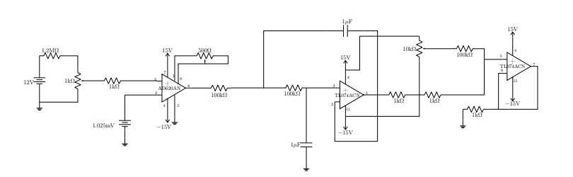
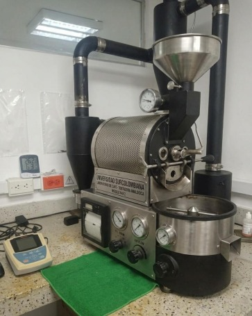
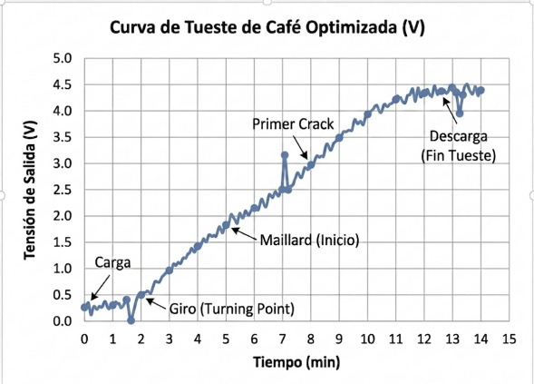
El salto del protoboard a una PCB profesional requiere mucho más que trazar pistas. Este proyecto documentó el flujo completo: esquemático, netlist, layout, DRC y generación de Gerbers para fabricación en JLCPCB. Desarrollé competencias en DFM que son directamente aplicables al trabajo industrial — entendí que diseñar correctamente para fabricación es tan importante como el diseño eléctrico mismo.
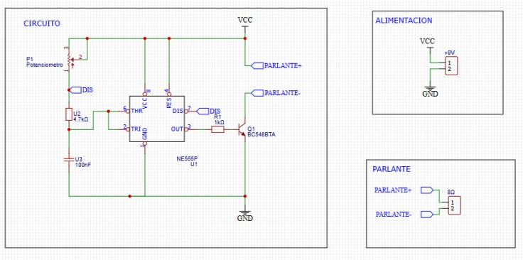
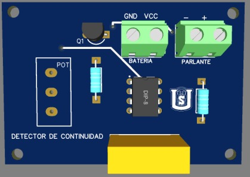
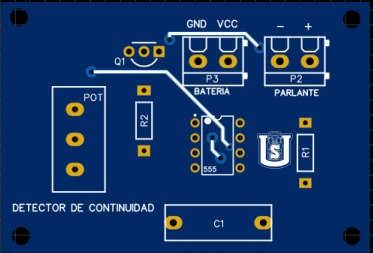
El proyecto más desafiante del semestre: reproducir analógicamente la señal eléctrica del corazón humano con sus cinco subondas y tres anomalías clínicas. La arquitectura modular en cuatro bloques me enseñó a pensar en sistemas complejos, descomponerlos en módulos independientes y validar cada uno antes de la integración. Una herramienta real con aplicación directa en calibración de equipos hospitalarios.
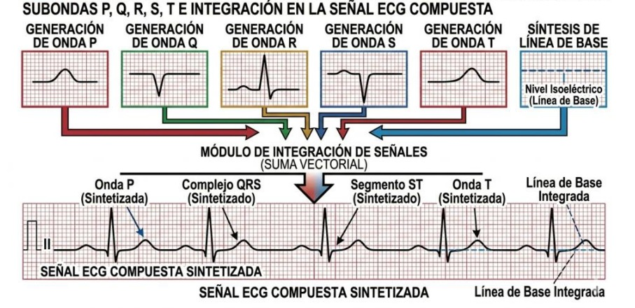
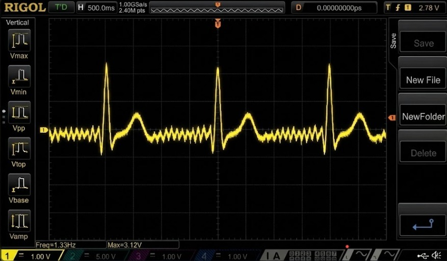

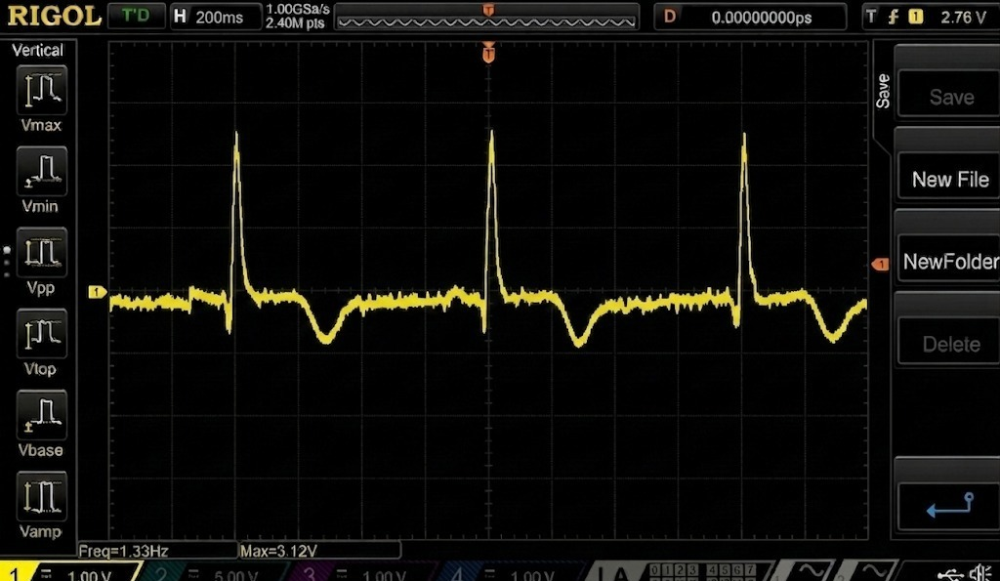